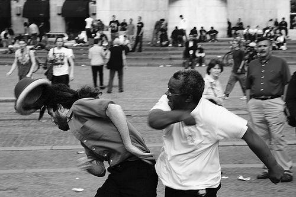
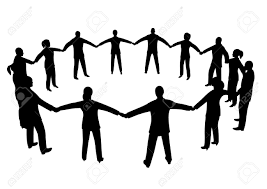
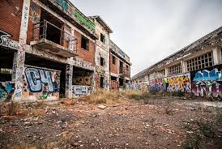
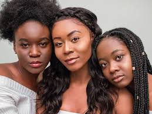

When we fight each other will take what we have. We get distracted by each other that the stuff around us we don’t notice. Don’t fight your brothers for stuff or a stranger will take it.
You should be comfortable in your circle or that's not your circle. The people in your circle should be beneficial and you should know who’s in your circle. You shouldn't have toxic things in your circle.
If you keep letting toxic things around you you will be stuck there. If we are following in are oppressors will stay in are tough situations. We need to build our own way to feed ourselves.
People should be cooperative and we should work together and judge other people so quick. Society should more connected and people shouldn't be so separated. People should take some time to understand each other. You can't judge because you can lose a potential friend.

Black women are treated wrong because there women and there black. Black women don’t have a lot of rowmodels. They are also treated wrong by black men.
